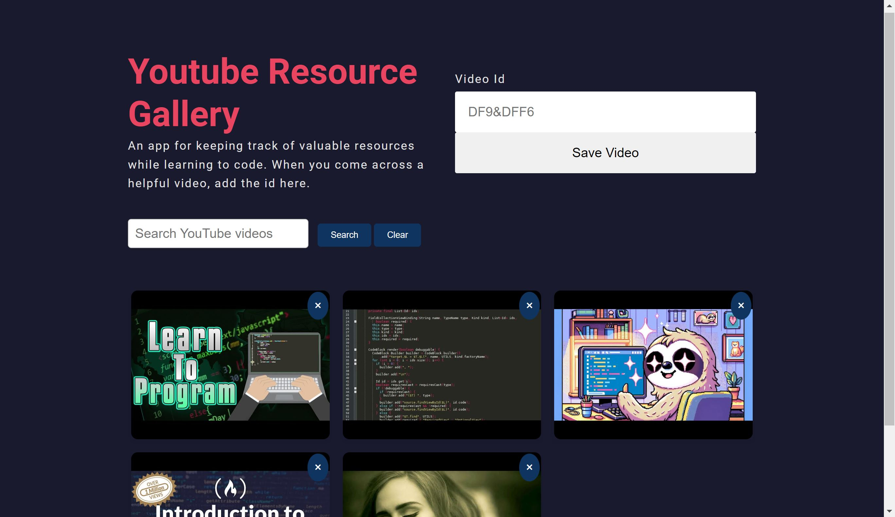
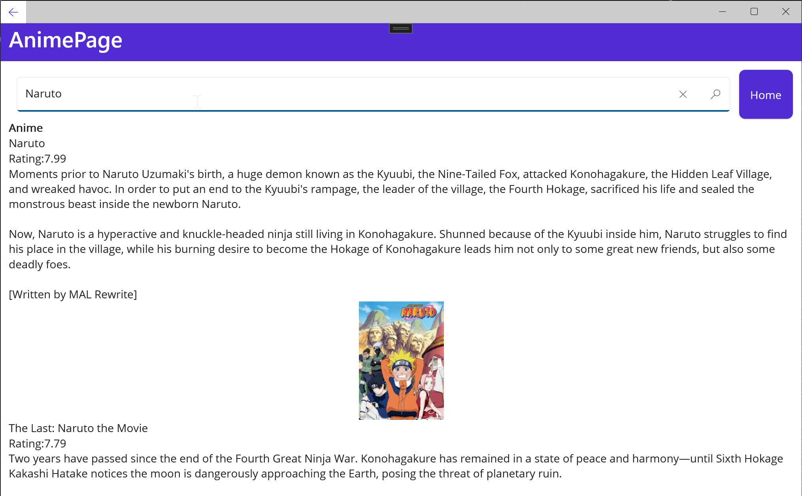
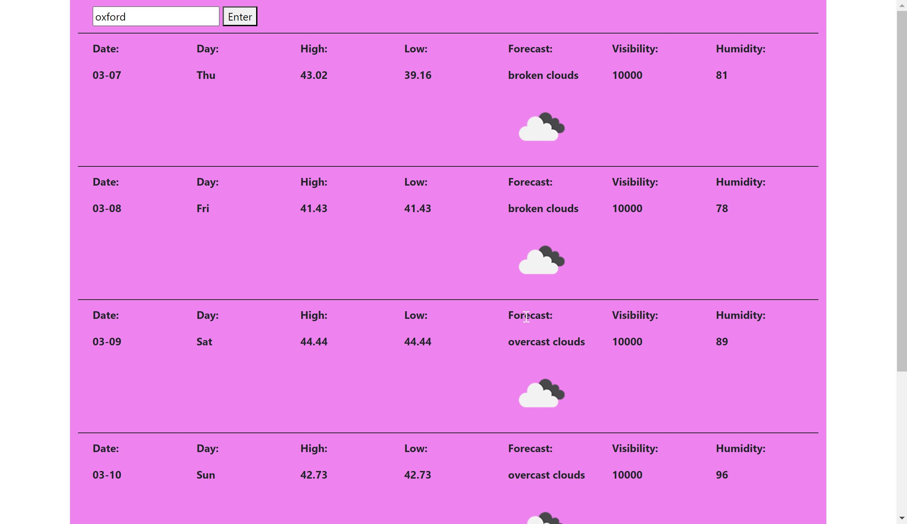

Stemming from the core concepts learned in Build The ULTIMATE JavaScript Portfolio Project
To Get A Job! by James Quick, this project stands as a testament to my ability to not only
grasp foundational web development practices but also innovate beyond them. While the initial
implementation was guided by the tutorial, I have significantly enhanced the application by
showcasing my skills in API integration, enhancing the UI with additional and different CSS, and
modifying the base functionality of the gallery. This project reflects my ongoing commitment to
learning, adapting, and creativity in software development.


A mobile application designed for anime enthusiasts,
developed using C# and the MVVM architectural pattern for optimal user experience.
It leverages the Jikan API to provide users with up-to-date information on popular
and seasonal anime, including ratings, summaries, and visuals. The app features a
customizable watchlist where users can add anime series, rate them, and track their
viewing. Its responsive UI and robust database ensure personalized and seamless
interactions. This project demonstrates my expertise in integrating third-party APIs
and managing user data, emphasizing my dedication to crafting user-centric solutions.

A dynamic and user-friendly application designed to provide accurate 5-day weather forecasts.
By integrating with the TomTom API, it precisely determines user locations and fetches
relevant forecast data from OpenWeatherMap. Initially designed to include a unique feature
allowing access to historical weather data through an OpenStack REST Server, this aspect
remains incomplete due to server access limitations. Despite this, the application successfully
demonstrates my proficiency in API integration and my commitment to developing practical and
interactive web applications. This project reflects my ability to navigate technical challenges
and adapt to changing circumstances, underscoring my dedication to continuous learning and improvement.